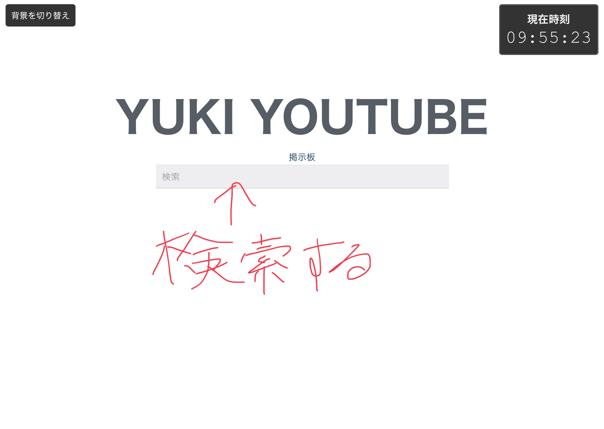
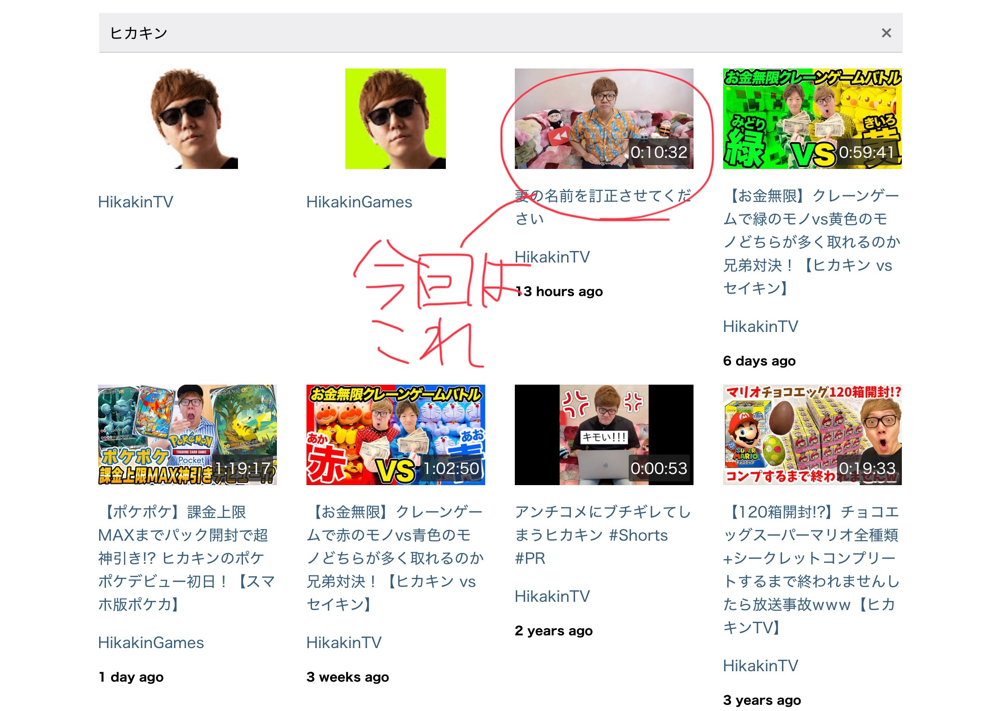
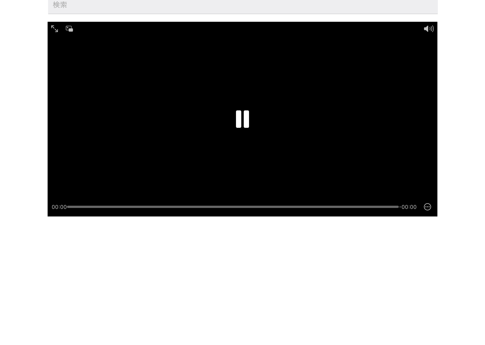
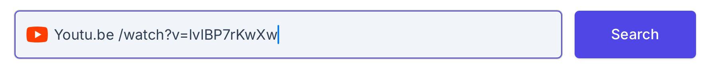
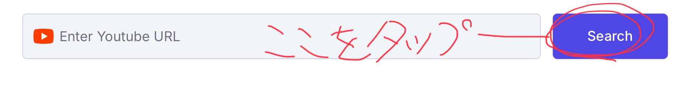

動画が見れない時のyukiyoutubeの使い方
それでは始めていきます。
①検索する
結構簡単ですが、一応やっておきます。
やり方は簡単。この検索欄に文字を打つだけです。今回は試しに「ヒカキン」と打ってみましょう。
②動画をタップ
見たい動画をタップするだけです。なんでもいい。
③URLをコピー
動画をタップしたのはいいものの、動画が再生出来ません。

なので、ここの一番上のURLをタップして、「/watch?v=」の先をコピーします。

④ダウンローダーを使う
YouTubeダウンローダーを使います。ググったりscratchで探せばあります。
そして入力欄に「Youtu.be」と入力し、その後に③でコピーしたURLをペーストします。
⑤動画を楽しむ
あとはこの横のボタンをタップして動画を視聴します。
まとめ
いかがでしたか？動画が見れないyukiyoutubeでも使えることがわかりました。
それでは、さようなら！ あー、つかれた。